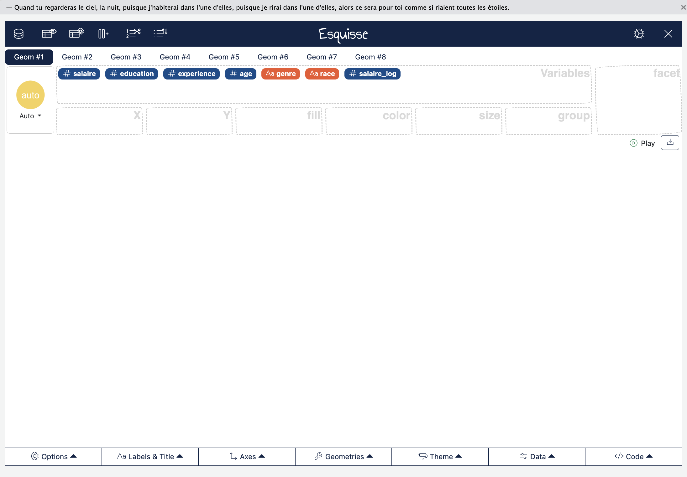
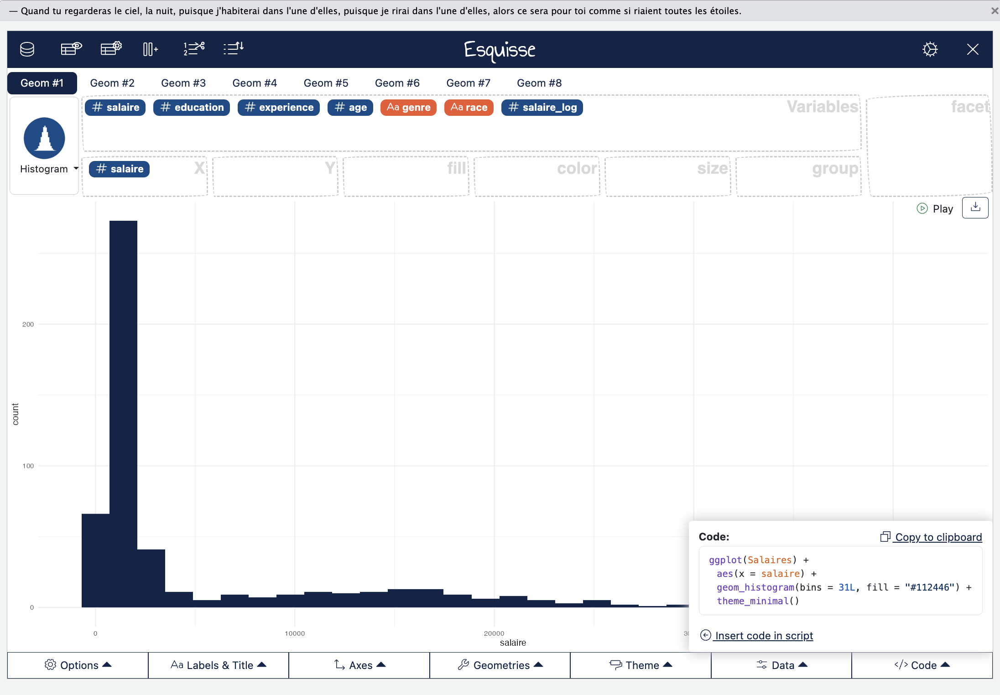
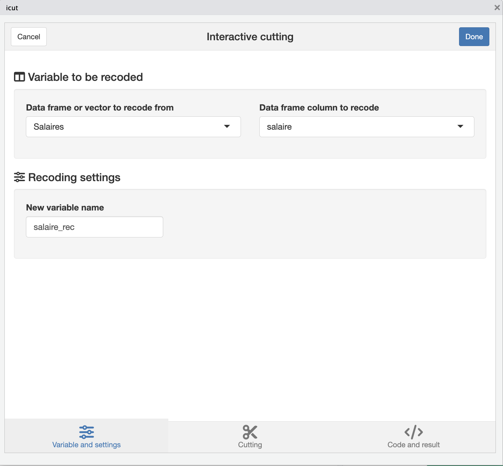
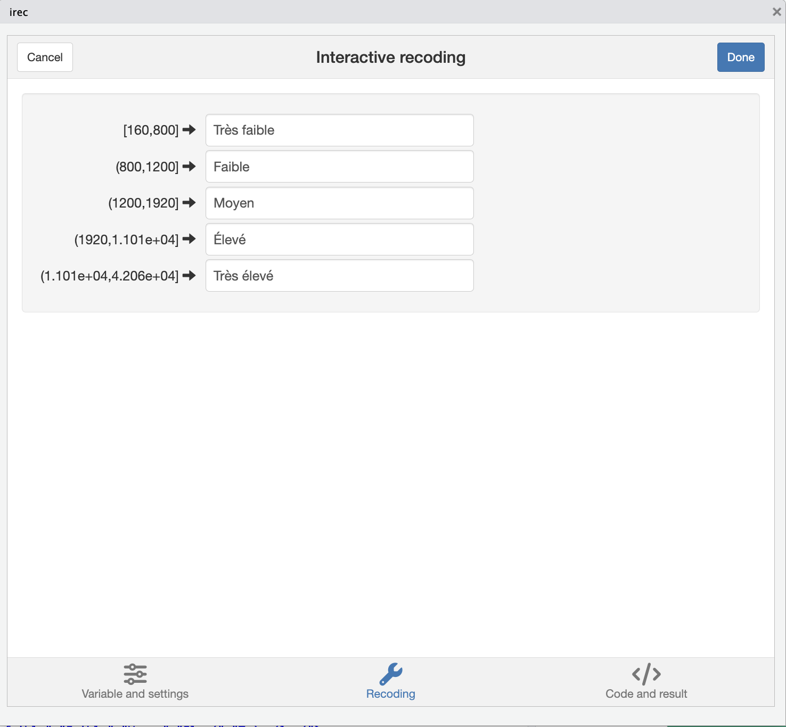

# On liste les packages dont on a besoin dans un vecteur nommé load.lib.
load.lib <- c("tidyverse","questionr","esquisse","kableExtra")
install.lib <- load.lib[!load.lib %in% installed.packages()] # On regarde les paquets qui ne sont pas installés
for (lib in install.lib) install.packages(lib,dependencies=TRUE) # On installe ceux-ci
sapply(load.lib,require,character=TRUE) # Et on charge tous les paquets nécessaires2 Statistiques univariées et recodages des variables
Dans ce chapitre, nous allons nous pencher sur la description univariée des variables, aussi bien des variables numériques (quantitatives) que des variables catégorielles (qualitatives) et sur leur recodage.
Nous allons avoir besoin de trois packages qui n’ont pas encore été chargés (et que vous n’avez peut-être pas encore installé).
Dans le code ci-dessous, voici une proposition de code pour vérifier l’installation des packages nécessaires à ce chapitre et les charger dans l’environnement.
Nous utilisons les mêmes données que dans l’introduction. Notons que nous utilisons ici des données non pondérées. Pour utiliser des données pondérées, on pourra se reporter au chapitre dédié (Approfondissements).
2.1 Décrire une variable quantitative
2.1.1 Résumer les variables par quelques statistiques
Dans R, les fonctions de base permettent de sortir les nombres de Tukey pour une variable quantitative :
Minimum
Premier quartile (Q1)
Médiane (Q2)
Troisième quartile (Q3)
Maximum
Pour obtenir ces statistiques descriptives on pourra écrire :
summary(Salaires$salaire)ou :
fivenum(Salaires$salaire)Quel serait l’équivalent dans le tidyverse, ce qui nous serait bien utile, notamment si nous souhaitons filtrer les lignes avant d’obtenir ces statistiques descriptives ?
Une solution serait de recourir aux fonctions permettant de générer chacune des statistiques, que nous connaissons déjà pour la moyenne :
Salaires |>
summarise(
min = min(salaire, na.rm = TRUE),
q1 = quantile(salaire, 0.25, na.rm = TRUE),
median = median(salaire, na.rm = TRUE),
q3 = quantile(salaire, 0.75, na.rm = TRUE),
max = max(salaire, na.rm = TRUE)
)On peut aussi utiliser la fonction fivenum, à ce moment là au lieu d’utiliser summarise, il faut utiliser reframe (car la sortie de fivenum renvoie plusieurs nombres) :
Salaires |>
reframe(
stat = c("min", "Q1", "médiane", "Q3", "max"),
salaire = fivenum(salaire)
)Avec la même logique, on peut alors sortir ces statistiques en filtrant sur les hommes et en s’intéressant à la fois à la variable du salaire et de l’expérience par exemple :
Salaires |>
filter(genre=="Homme") |> #ou sexe=="
reframe(
stat = c("min", "Q1", "médiane", "Q3", "max"),
salaire = fivenum(salaire),
experience = fivenum(experience)
)On a fait une si jolie sortie qu’on souhaiterait la sortir sous forme d’un tableau, mais voilà le copier-coller de la console n’est pas très joli…
Pas de panique, il existe plein de packages dans R pour faire des sorties de jolis tableaux. On se propose ici d’utiliser kableExtra :
sumH<-Salaires |>
filter(genre=="Homme") |> #ou sexe=="
reframe(
stat = c("min", "Q1", "médiane", "Q3", "max"),
salaire = fivenum(salaire),
experience = fivenum(experience)
)
sumH |> kbl() |> kable_classic(full_width = F)La fonction kbl transforme l’objet sumH en un tableau de format latex/html qui est afficé dans le “Viewer” (en bas à droite) et la fonction kable_classic est une des fonctions de formatage par défaut que j’ai choisi. On peut customiser à l’infini ce type de tableau (y compris en ajoutant titre, légende…), le principal intérêt étant surtout de pouvoir le copier-coller de manière propre dans son rapport/article/thèse.
2.1.2 Résumer avec les quantiles
On peut aussi vouloir résumer sa variable avec des quantiles, qui sont des seuils qui permettent de séparer une distribution en parties égales. Par exemple, si on souhaite obtenir les déciles d’une distribution :
quantile(Salaires$salaire, probs = seq(0.1, 0.9, by = 0.1))ou :
Salaires |>
reframe(
stat = paste0("D", 1:9),
salaire = quantile(salaire, probs = seq(0.1, 0.9, by = 0.1))
)2.1.3 Résumer une variable quantitative avec un graphique
Tout cela est bien beau et semble nous suggérer que le salaire est une variable très asymétrique avec une queue de distribution très étalée sur la droite. Peut-on visualiser la distribution ?
Oui, on peut faire un petit histogramme de base, en écrivant :
hist(Salaires$salaire)Si on veut faire un graphique plus joli, on utilisera le package ggplot2 (chargé avec l’extension tidyverse). Comme nous nous familiarisons avec R, on peut utiliser le package esquisse qui propose une solution clic-bouton pour réaliser son graphique. Il faut exécuter la ligne suivante :
esquisse(Salaires)Cela devrait charger une interface avec en haut les différentes variables du jeu de données qu’il va falloir glisser dans les cases correspondantes.

En faisant glisser la variable salaire dans la case X, un histogramme se crée automatiquement. On peut modifier cette représentation et par exemple préférer une distribution avec la fonction de densité. L’ensemble du graphique est “customizable” avec les options dessous.
Enfin, on peut enregistrer son graphique mais aussi copier-coller le code permettant de créer le même graphique sans avoir à réouvrir Esquisse !

Quelques mots sur le code permettant de faire cet histogramme :
#|eval: false
ggplot(Salaires) +
aes(x = salaire) +
geom_histogram(bins = 31L, fill = "#112446") +
theme_minimal()ggplot dit à R qu’on crée un graphique sur les données de la base salaire,
les fonctions au sein du ggplot sont séparées par des +,
la fonction aes définit les variables mises en jeu dans le graphique (ici le salaire en x),
la fonction “geom_…” définit la représentation graphique souhaitée avec les paramètres automatiquement choisi (la couleur et le nombre de bins : plus il est élevé, plus les barres sont fines),
et theme_minimal assigne un “theme” de fond pour le graphique.
2.2 Décrire une variable qualitative
Décrire une variable quantitative c’est bien beau, mais nous avons souvent pas mal de variables qualitatives dans nos jeux de données. Comment la décrire ?
La fonction freq du package permet de sortir le nombre d’observations, la proportion dans l’échantillon et la proportion cumulée :
#|eval: false
freq(Salaires$sexe)Il est aussi possible d’utiliser cette fonction dans le tidyverse en filtrant sur un sous-échantillon de sa base :
#|eval: false
Salaires |> filter(race=="Blanc") |> freqtable(genre) |> freq()Si on veut ajouter le nombre d’individus par modalités sur le graphique on pourra ajouter cette ligne de code :
ggplot(Salaires) +
aes(x = genre, fill = genre) +
geom_bar() +
geom_text(stat = "count", aes(label = after_stat(count)), hjust = 1.1, size = 6) + #Ligne à ajouter
scale_fill_brewer(palette = "Dark2", direction = 1) +
coord_flip() +
theme_minimal() +
theme(
axis.title.y = element_text(size = 18L),
axis.title.x = element_text(size = 18L),
axis.text.y = element_text(size = 18L),
axis.text.x = element_text(size = 18L),
legend.text = element_text(size = 18L),
legend.title = element_text(size = 18L)
)2.3 Recoder une variable quanti en une variable quali
Pour recoder une variable quantitative en une variable qualitative, rien de plus simple. Dans R, nous pouvons utiliser un add-ins de Julien Barnier dans son package questionr, icut. Pour le lancer, on peut cliquer sur “Addins” dans RStudio et cliquer sur “Numeric range dividing”. Ou alors, on peut simplement écrire dans la console :
icut()Cela devrait ouvrir la console. On peut alors choisir la base au sein de laquelle on veut recoder une variable, choisir la variable à recoder et indiquer le nom de la variable recodée (par défaut, ancien nom de la variable où est ajouté “_rec”). Cet add-ins s’appuie sur la fonction cut() de R.
Différentes options de recodage sont proposées, soit de manière manuelle (on a repéré des valeurs saillantes, ou on connait des valeurs saillantes d’une variable, par exemple un niveau de pauvreté…), en utilisant un algorithme de reclassification (Jenks que les géographes aiment bien, ou d’autres algorithmes), ou avec les quantiles, ou avec classes d’intervalles égaux dans la distribution (equal width).
Il ne faut pas confondre les deux derniers :
les quantiles sont des seuils qui permettent de séparer l’échantillon en n parties égales
les classes d’intervalles égaux coupent la distribution (ici les valeurs du salaire) en tranches égales. Si la distribution n’est pas unifome, classes de quantiles et classes d’intervalles seront très différents (et c’est le cas ici pour le salaire qui a une distribution très asymétrique).

Dans la pratique, j’aime bien les quantiles, qui sont des seuils qui permettent de séparer une distribution ordonnée en parties égales. On crée alors des classes ou des tranches ou des groupes de quantiles, par exemple :
Avec des quartiles
Avec des quintiles
Avec des déciles
Avec des centiles
Probablement par abus de langage, on a parfois tendance à dire simplement qu’on a recodé notre variable en quantile (par exemple en déciles) et qu’on a créé des déciles (et non des classes de déciles). C’est pratique, mais il ne faut pas oublier que les quantiles sont avant tout des seuils dans une distribution !
Ici, recodons la variable salaires en salaires_rec en utilisant les quintiles. Il faut choisir :
Cutting method : Quantile
Breaks number : 5
Breaks : rien à modifier, les quantiles ont été calculés automatiquement
Right-closed intervals : par défaut, la fonction cut propose des intervalles fermés à gauche et ouverts à droite. Suivant les cas (et c’est le cas ici pour bien équilibrer les groupes), on peut choisir des intervalles fermés à droite, donc cocher l’option.
Include extreme : on veut s’assurer qu’aucune valeur extrême n’est omise dans la catégorisation, donc on coche.
De même avec Append extreme values if necessary
Label digits : le nombre de décimales retenues pour définir les seuils (notre variable salaire n’a pas de décimale donc ce n’est pas important ici).
Le troisième onglet propose le code, un tableau de distribution de la variable recodée et un diagramme à barres pour visualiser la distribution des différentes modalités (c’est en regardant ce graphique que j’ai décidé de fermer les intervalles à droite pour légèrement rééquilibrer les modalités qui doivent l’être vu qu’on a choisi des quintiles).
On peut alors cliquer sur Done. Attention, la variable n’a pas été créée mais dans la console, le code permettant de la créer est proposé, il suffit de le copier-coller dans son code et de le faire tourner (on peut aussi le modifier directement soi-même si on veut) :
## Cutting Salaires$salaire into Salaires$salaire_rec
Salaires$salaire_rec <- cut(Salaires$salaire,
include.lowest = TRUE,
right = TRUE,
dig.lab = 4,
breaks = c(160, 800, 1200, 1920, 11008, 42064)
)2.4 Recoder les modalités d’une variables quali
L’onglet icut ne permet pas d’ajouter des labels aux classes créées.
On peut modifier la fonction cut pour indiquer des noms grâce à l’argument “labels” :
Salaires$salaire_quint <- cut(Salaires$salaire,
include.lowest = TRUE,
right = TRUE,
dig.lab = 4,
breaks = c(160, 800, 1200, 1920, 11008, 42064),
labels=c("Très faible","Faible","Moyen","Elevé","Très élevé")
)Une autre solution est d’utiliser un autre add-ins du package de questionr, “Levels recoding” (disponible dans l’onglet Addins) qu’on peut appeler grâce à la fonction :
irec()On peut choisir de recoder ses variables en format character ou en format factor. Dans la pratique, dès lors qu’on a une variable avec une liste fermée de catégories, on travaille avec des factor (notamment parce qu’on peut ordonner les catégories). On privilégiera le format character pour des variables de type textuel, des phrases, des paragraphes, etc (dans la pratique, plusieurs fonctions de R transforment automatiquement une variable character en factor avant un traitement statistique).

Là encore, le troisième onglet permet de récupérer le code R correspondant et de vérifier qu’aucune modalité de la variable recodée n’est oubliée (elle serait transformée en NA). À noter qu’il faut explicitement copier le code dans le script et le faire tourner pour que les changements s’appliquent à la variable.
2.5 Modifier l’ordre des modalités
Un dernier add-ins bien utile est celui permettant le réordonnancement des catégories d’une variable de type factor.
Par défaut, les modalités sont souvent ordonnées par ordre alphabétique.
Dans la pratique, c’est rarement l’ordre que nous souhaitons privilégier !
L’onglet “Levels ordering” permet alors de réordonner ses catégories.
iorder()2.6 Exercices
On propose de répondre aux questions suivantes à l’aide des outils que nous avons vu dans ce chapitre :